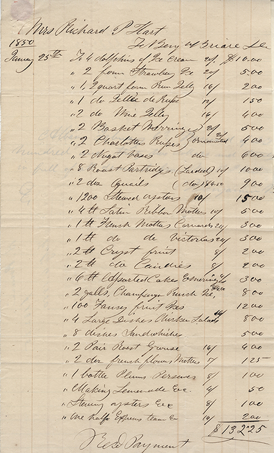

You have been invited to the Hart family Ball of January 1850.
This mobile app will provide a question-answer dialogue with historical persons and items as you move from room to room.
To begin your visit, point your mobile device toward the clock in the hallway. Tap on the maid that appears
to learn about the Hart Family Ball that took place in this house with 150 guests.
Richard and Betsey Hart were well-to-do and had 14 children, 8 of whom were daughters.
Sponsoring a Ball was an opportunity for them to meet suitors for eventual marriage.
This is an Augmented Reality mobile application that overlays historically accurate images of people
and food that are representative of the 1850s in Troy. This app will lead you on a guided tour where you
can interact with the people by asking them questions, and learn more about the food and drink. Tap on the images
that appear to open a dialogue.
The Harts hired a 9-piece band who set up at the end of the hallway.
They played this Virginia Reel and Polka songs for guests to dance in the parlor.
This Drawing or Sitting Room had ice desserts and champagne punch.
Guests would sit in this room with their food and drink to talk with others and rest their feet from
the dancing that was in the parlor, across the hallway.
They served flavored desserts of elaborately carved ice, and baked scones.
This room was for guests to meet others while enjoying desserts and drinks from here and the dining room.
Guests could rest their feet from dancing in the parlor, on the other side of the hallway.
The bill was $132.25 in 1850, equal to over $4060 in 2014 dollars.

Good evening. My name is Bridget Larkins.
If there is anything that you need, I would be delighted to assist you.
I am enjoying it very much. And you sir/madam?
I was born in Ireland and immigrated to Troy due to the Potato Famine.
The Harts were one of the first families in Troy to hire Irish and freemen as their servants.
I have been with the Harts for as long as I can remember.
They are a good family and very kind to me. Mrs. Hart's mother, Mrs. Howard, sent me with
Mrs. Hart to keep her company and help her adjust to her life in Troy. I've been with Mrs. Hart for so many years that
I've cooked for her, cleaned for her, watched her grow up and even helped her birth her children.
I work from dawn to dusk, cooking for the family, cleaning and maintaining the home, and
making sure the children are tended to.
I am 56 years old and cannot work like I used to, but the Harts are still very good to me.
Wonderful. You may join the other guests in the dining room.
Please enjoy the refreshments and appetizers.
I do believe there are many interesting things to see around this house.
We have desserts and dancing in our parlor. And we have desserts, hor d'ourvres and champagne
in our dining room.
Mrs. Hart has been suffering from the loss of her late husband Richard.
Her mother, Mrs. Howard has moved in and I believe her presence has really been helping Mrs. Hart compose herself.
I must say, I truly admire the initiative the Hart women have been taking towards education for young women.
I never would have imagined little Betsey would ever grow to be so engaged in business and city culture.
Richard and Betsey both have had quite an interest in promoting education.
Betsey strongly supported the Troy Female Seminary. Eight of her girls, in fact, have attended the institution.
She has changed so much since she first came here with Richard.
I remember, when Betsey was young, she could hardly cook and was reluctant to mingle with the older wives in the
neighborhood.
Good evening. Mrs. Hart has the finest tastes in town. The oysters arrived from the city this morning, and the
game was caught yesterday.
If you are looking for ice cream or champagne, you can find them in the drawing room.
If there is anything you fancy, I am here to help.
Mrs. Hart runs an impeccable household.
We moved the parlor furniture to the back building and rolled up the carpets to make room for the dancing.
The china had to be unpacked and cleaned. I snore, we've been dusting and polishing all week!